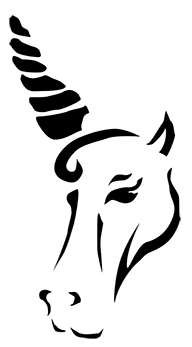
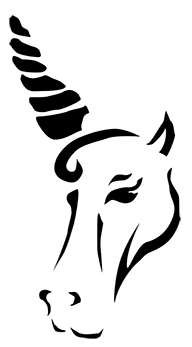

The steps to a basic animation are pretty simple and you can create basic animations by writing code manually in HTML5, CSS and JavaScript. Click me to learn more…
Learn more about APIs and how this tool will help keep connectivity through-out all of your personal devices.
Before HTML5 audio and video were unwieldy and unnecessarily complicated. Check out how easy it is to use now.
Learn some advance Canvas element coding without breaking a sweat. You’ll learn how to make simple shapes and object’s come alive, all while moving across you’re screen with ease.
Bree Armenta is a returning alumnus at The Art Institute of California – San Francisco focusing her studies primarily in web. During her year break from school she worked as a contract interactive designer for Baker Street Advertising and a contract digital designer for TuneIn. Her relentless passion for design drives her forward in pursuit of that next great project. A deep understanding and appreciation for coding also provides her with a unique skill base.
Cecil Baxter is an Airforce veteran with a well-rounded experience in coding, communications, and film. He has a Bachelor’s degree in Business Management and is currently working on a degree in Web Design at the Art Institute of California-San Francisco. When Cecil is not coding or working on film project’s, he’s mentoring future veterans and traveling around the world.
Donovan Carmichael is currently a student at the Art Institute of California – San Francisco, working towards his Bachelor's degree in web design. Although new to the web community, he currently has four projects that are near completion and ready to be released. Not only is he an adventurer online, but he also enjoys driving through mountain passes, or any tunnel carved in a tree. Donovan seeks to find the magic in everything.
I am Garry Medina, a US Army Veteran and currently taking Web Design and Interactive Media at the Arts Institute of California – San Francisco campus. This is a 180 degrees turn for me in terms of career. For the longest time, I was working as a Medical Technologist for the Military HIV Research Program, developing vaccines for members of the Armed Forces at the Walter Reed Army Institute of Research in Washington D.C.
Joe Linares is currently studying web design and putting his knowledge to use. He has designed and coded several small websites by himself and with small teams. Hungry for knowledge he is continual pushing the lines that bound what is in his head, to what he can create on the web. He likes long walks and the beach.
Michelle Fern is a crafter, a musician, a designer, and a coder. She has a Bachelor’s degree in Theater Arts and is currently close to completing an Associate’s degree in Web Design. She is the Registrar at the Art Institute of California – San Francisco during the week and volunteers at historical play fairs during most weekends. In her remaining “spare” time she is either playing ukulele for her cats or making rainbow origami sculptures out of starburst wrappers.
 
